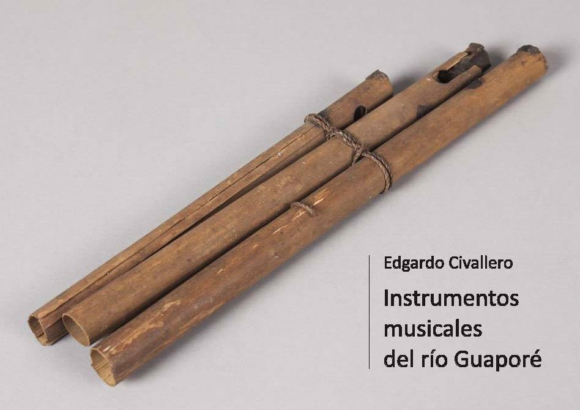

Instrumentos musicales del río Guaporé
Inicio > Libros digitales sobre música > Instrumentos musicales del río Guaporé
Cómo citar este trabajo: Civallero, Edgardo (2021). Instrumentos musicales del río Guaporé. 2.ed.rev. Bogotá: Wayrachaki Editora.
Descargar en PDF.
Este libro es una traducción comentada, resumida y analíticamente enriquecida del estudio pionero del etnólogo alemán Emil Heinrich Snethlage (Musikinstrumente der Indianer des Guaporégebietes, 1939). A partir de ese texto se reconstruye con precisión etnográfica y mirada crítica el paisaje sonoro de las culturas indígenas que habitan la cuenca binacional del Guaporé o Iténez —frontera natural entre Bolivia y Brasil—, una de las regiones más diversas y menos conocidas de la Amazonía sudoccidental.
La introducción establece el marco histórico del trabajo original: la expedición realizada entre 1933 y 1935 por Snethlage bajo patrocinio del Museum für Völkerkunde de Berlín y la Fundación Bäßler. Su labor —recoger miles de objetos, filmar, registrar cilindros de cera, anotar vocabularios y prácticas rituales— constituye uno de los archivos etnográficos más tempranos de la región. Se destaca la importancia de este corpus como testimonio de tradiciones hoy extintas o radicalmente transformadas, pero advierte sobre los sesgos coloniales del discurso original, subrayando la necesidad de una lectura crítica que devuelva agencia y complejidad a los pueblos estudiados.
El texto presenta una revisión exhaustiva de las sociedades visitadas por Snethlage: Moré (o Iténez), Itoreauhip, Makurap, Aruá, Jabutí, Arikapú, Tuparí, Wajurú, Kumaná, Pauserna, Abitana, Mampiapä, Guaratägaja y Chiquitano, entre otras. Se resumen su localización, filiación lingüística, tamaño poblacional y estado actual, mostrando cómo la mayoría se halla hoy desaparecida o reducida a pequeños núcleos en Rondônia y Beni. Esta contextualización demográfica y cultural enmarca la lectura del inventario organológico, que constituye el cuerpo central del libro.
El repertorio documentado abarca todas las familias del sistema Hornbostel–Sachs. Los idiófonos son descritos con una precisión notable: espatas de palma transformadas en tambores percutidos (munupúk), sonajeros de calabaza o bambú (tschikít, narán), cinturones y brazaletes con semillas o huesos (kãnkãn), y friccionadores de calabaza con resina, empleados en danzas. El texto muestra cómo estas formas, aparentemente simples, condensan una estética sonora basada en la textura, el ritmo corporal y la relación con los materiales vegetales de la selva.
Los cordófonos, en cambio, son escasos: el arco musical mapyp de los Moré e Itoreauhip —de madera de palma y cuerdas de algodón encerado— ilustra una práctica acústica mínima, de timbre tenue, que conecta con tradiciones amazónicas más amplias.
El núcleo más complejo corresponde a los aerófonos, cuya diversidad tipológica revela una intensa creatividad técnica y simbólica. Las trompetas simples y compuestas aparecen en casi todos los grupos, fabricadas con caña, calabaza, hueso, cerámica o madera de Cecropia. Los nombres locales —tamará, upín, täki, woáp, bōmbōm, pūpū— designan instrumentos destinados a la comunicación, la convocatoria o el anuncio ritual, y se asocian a contextos ceremoniales y festivos. Se destacan las trompetas de hueso humano con pabellones de cera de los Abitana (arakuanjām), una práctica de fuerte carga simbólica vinculada a la guerra y al contacto con los muertos.
La sección dedicada a las flautas y clarinetes es especialmente rica. Incluye flautas de bambú, hueso y madera (paruparó, wonkatí, sirimijá), clarinetes sin orificios construidos con una lengüeta y cámara resonante (woāp), flautas longitudinales de aviso (jirõn, tätät), flautas de Pan de hilera simple o doble (tzéna muráu, bänêbänê, amemkó, schakó), silbatos globulares de nuez (furatá, puratá) y aerófonos de succión con lengüeta, de probable uso lúdico. Cada modelo se analiza en relación con su función: entretenimiento, comunicación, rituales chamánicos o ceremonias agrícolas. La práctica de construir los instrumentos con material verde y destruirlos tras su uso —descrita entre los Aruá y Tuparí— expresa la naturaleza efímera del sonido y su asociación con el ciclo vital y ecológico.
El registro incluye también flautas múltiples de pico, flautas de digitación y "silbatos matacos", mostrando afinidades con tradiciones del Chaco y del Vaupés. El libro subraya cómo la multiplicidad de soluciones acústicas —desde tubos cerrados con tapones de cera hasta sistemas de resonadores— refleja un conocimiento empírico de la física del sonido, desarrollado sin mediaciones escritas.
Más allá del inventario técnico, el texto propone una lectura de fondo: la organología del Guaporé no puede entenderse sin atender a su dimensión cosmológica. Los materiales —caña, cera, calabaza, hueso, pluma— funcionan como entidades vivas; cada instrumento es un mediador entre humanos y espíritus, entre selva y comunidad. El trabajo reinterpreta las notas de Snethlage desde una perspectiva decolonial, reconociendo en estos objetos sonoros no simples "artefactos", sino sistemas de relación y conocimiento.
A través de su rigor descriptivo y su mirada reflexiva, la obra ofrece una panorámica única de la Amazonía sudoccidental: un territorio donde el sonido fue, y sigue siendo, la forma más profunda de memoria.